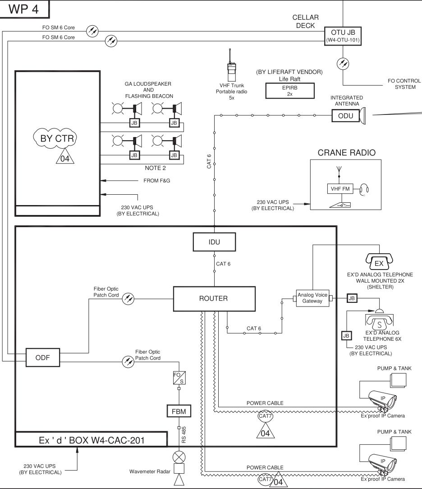

CHAPTER 1 : GENERAL INTRODUCTION
SECTION 1 : INTRODUCTION
1.1. INTRODUCTION
The WP4 operating manual comprises the following:
• Book 1: "Operating Manual", whose chapters describe the WP4 Wellhead platform,
• Book 2: "Operating Procedures", whose chapters describe the corresponding operation of the Facilities
• Drawings (i.e. diagrams) related to both Book 1 and Book 2.
The Chapters of Book 1 "Operating Manual" are structured as shown below:
| General Introduction | |
| Safety and Critical System:
Escape & Evacuation Facilities and Safety Equipment |
|
| Safety and Critical Systems:
Shutdown Philosophy |
|
| Safety and Critical Systems:
Fire and Gas Detection System |
|
| Safety and Critical Systems:
Firefighting Systems |
|
| Safety and Critical Systems:
Integrated Control and Safety System |
|
| Safety and Critical Systems:
Electrical System and UPS |
|
| Safety and Critical Systems:
Communication System |
|
| Safety and Critical Systems:
Wellhead Control Panel - Hydraulic Power Unit 1 |
|
| Safety and Critical Systems:
Hydraulic Power Unit 2 |
|
| Extraction Wells - Flowlines:
Wellheads wells Nr 1 to Nr 4 |
|
| Extraction Wells - Flowlines:
Wellhead Manifolds |
|
| Extraction Wells - Flowlines:
Wet Gas Meter |
|
| Extraction Wells - Flowlines:
PIG Launcher |
|
| Extraction Wells - Flowlines:
Open drains |
|
| Utilities:
Closed drains and Vent system |
|
| Utilities:
Fresh Water |
|
| Utilities:
Chemical Storage and Injection |
|
| Utilities:
Material Handling |
The procedures of book 2 "Operating Procedures" are grouped in parts as shown below:
| General:
WP4-01.1 – Introduction: WP4-01.1.1 – Typical sampling procedure MM-YAD-91-HHIE-450002-01 |
|
| Safety and Critical Systems:
WP4-02.1 – Escape & Evacuation Facilities and Safety Equipment: NA WP4-02.2 – Shutdown Philosophy: WP4-02.2.1 - ESD test MM-YAD-91-HHIE-450002-02 WP4-02.3 – Fire and Gas Detection System: WP4-02.3.1 – F&G test MM-YAD-91-HHIE-450002-03 WP4-02.4 – Firefighting Systems: WP4-02.4.1 – Hydrant test MM-YAD-91-HHIE-450002-04 WP4-02.5 – Integrated Control and Safety System: NA WP4-02.6 – Electrical System and UPS: WP4-02.6.1 – Black Start Procedure MM-YAD-91-HHIE-450002-05 WP4-02.7 – Communication System: NA WP4-02.8 Wellhead Control Panel – Hydraulic Power Unit 1: WP4-02.8.1 – Normal Start of the Wellhead Control Panel U-0040 MM-YAD-91-HHIE-450002-06 WP4-02.8 Wellhead Control Panel – Hydraulic Power Unit 1: WP4-02.8.1 – Normal Start of the Wellhead Control Panel U-0040 MM-YAD-91-HHIE-450002-06 WP4-02.8.2 - Normal Stop of the Wellhead Control Panel U-0040 MM-YAD-91-HHIE-450002-07 WP4-02.8.3 - Initial Start-up of the Wellhead Control Panel U-0040 MM-YAD-91-HHIE-450002-08 WP4-02.9 Hydraulic Power Unit 2: WP4-02.9.1 - Normal Start of the Hydraulic Power Unit-2 U-0044 MM-YAD-91-HHIE-450002-09 WP4-02.9.2 - Normal Stop of the Hydraulic Power Unit-2 U-0044 MM-YAD-91-HHIE-450002-10 WP4-02.9.3 - Initial Start-up of the Hydraulic Power Unit-2 U-0044 MM-YAD-91-HHIE-450002-11 |
|
| Extraction Wells - Flowlines
WP4-03.1 Wellheads wells Nr 1 to Nr 4 WP4-03.1.1 - Initial start of any first well MM-YAD-91-HHIE-450002-12 WP4-03.1.2 - Start-up procedure of any well from normal shutdown state and export. MM-YAD-91-HHIE-450002-13 WP4-03.1.3 - Normal shutdown of any well from normal operating state. MM-YAD-91-HHIE-450002-14 WP4-03.1.4 - Reset to service of the wells from safety shutdown states. MM-YAD-91-HHIE-450002-15 WP4-03.1.5 - Shut-down of any well for offloading while the other wells are running. MM-YAD-91-HHIE-450002-16 WP4-03.3 Wet Gas Meter WP4-03.3.1 – Putting any Well on test through the Wet Gas Meter MM-YAD-91-HHIE-450002-17 WP4-03.4 Pig Launcher WP4-03.4.1 – Pigging Operation MM-YAD-91-HHIE-450002-18 |
|
| Utilities:
WP4-04.1 Open drains WP4-04.1.1 - Initial start of the open drains system MM-YAD-91-HHIE-450002-19 WP4-04.1.2 - Routine operation for the open drains system MM-YAD-91-HHIE-450002-20 WP4-04.1.3 - Preparation of Open drain drum D-0041 for maintenance intervention MM-YAD-91-HHIE-450002-21 WP4-04.2 Closed drains and Vent systems WP4-04.2.1 - Normal start of closed drains and Vent system MM-YAD-91-HHIE-450002-22 WP4-04.2.2 - Normal stop of closed drains and Vent system MM-YAD-91-HHIE-450002-23 WP4-04.2.3 - Preparation of Closed drain drum D-0040 for maintenance intervention MM-YAD-91-HHIE-450002-24 WP4-04.2.4 - Initial Start of the Closed drain and Vent system MM-YAD-91-HHIE-450002-25 WP4-04.3 Fresh Water WP4-04.3.1 - Initial Start-up of the Fresh Water MM-YAD-91-HHIE-450002-26 WP4-04.3.2 - Routine checks for the Fresh Water system MM-YAD-91-HHIE-450002-27 WP4-04.4 Chemical Storage and Injection WP4-04.4.1 - Preparation of Chemical tank T-0040 for maintenance intervention MM-YAD-91-HHIE-450002-28 WP4-04.4.2 - Normal Start of the Chemical Injection Pump MM-YAD-91-HHIE-450002-29 WP4-04.4.3 - Change-over of the Chemical Injection Pump MM-YAD-91-HHIE-450002-30 WP4-04.4.4 - Normal Stop of the Chemical Injection Pump MM-YAD-91-HHIE-450002-31 |
1.2. BADAMYAR FIELD

The Yadana field is operated by Total E&P Myanmar (31.24%) in association with UNOCAL (28.26%), PTTEP (25.5%) and MOGE (15%).The Yadana gas field is located 80 km offshore Myanmar in blocks M5/M6 in the Andaman Sea. Start-up of the field was in 1998. Yadana gas is transported via a 344 km x 36” sea line to east shore, where it is delivered to the domestic market and then further transported via a 54 km x 36” pipeline to Thailand. Since 2010, a 24” domestic offshore pipeline supplies the domestic requirement direct to Yangon.
The Yadana offshore complex comprises the following platforms:
• PP Production Platform: dehydration and power generation,
• QP Quarter Platform decommissioned in 2014,
• QP2 Quarter Platform – bridge linked to PP,
• FP Flare Platform decommissioned in 2014,
• FP2 Flare Platform – bridge linked to MCP,
• WP1 Wellhead Platform – bridge linked to PP,
• WP2 & WP3 Wellhead Platforms, located respectively at 2 km and 10 km from PP,
• MCP Medium (Pressure) Compression Platform – bridge linked to PP.
The development of the Yadana field and its surrounding discovered fields was foreseen as a phased
development. The three phases that have been implemented to date are:
• Phase 1 (Initial Development) of two wellhead platforms WP1 and WP2 each with 7 wells, a
Production Platform PP, living quarters QP, flare tripod FP, a 20“ x 3.5 km line from WP2 to PP, and the 355 km 36” export gas line to the platform onshore PLC and on to the metering station MS.
• Phase 2 (Domestic Pipe) delivering gas direct from the offshore facilities to Yangon. The actual start-up of this 24” pipeline was in 2010.
• Phase 3 (MP Compression) comprising an additional compression platform MCP linked to PP started in 2010.
The LCP-Badamyar Project is the Phase 4 of this development. It consists of an additional compression platform LCP linked to MCP and the development of Badamyar field with a wellhead platform (WP4), tied back to compression platform LCP. It includes modifications on PP, MCP and WP1 platforms.
The Phase 4 start-up is planned for 2017. Initial operational mode is LP mode with a possibility of operation in MP mode depending on behaviour of Yadana reservoir.

1.3. WP4 PLATFORM
1.3.1 Purpose
The purpose of the Wellhead Platform WP4 is to maintain the Badamyar gas production, while the wellhead flowing pressure will decrease, through new unmanned 9 slots Wellhead Platform which will produced gas from up to 6 producing single well completions (4 initially installed and 2 future). The production rate from each well can be varied to give the total flow requirements at the Central Yadana facility.
Normal operation of the wells is remotely controlled and monitored from the QP2 PCS. The wells can also be controlled from the HMI and wellhead control modules located on WP4. The produced gas is routed to LCP via a new subsea pipeline.
The following process and utilities are provided on WP4:
• Flowline, Test Manifold and Production Manifold
• Wet Gas Meter
• Open and Closed Drain Systems
• Vent System
• Pigging Facilities
• Chemical Injection Package
• Utilities e.g. Electrical Power, Hydraulic Power Unit and Fresh Water System
1.3.2 Environmental Conditions
Bathymetry:Badamyar wellhead platform at Badamyar site (WP4) is located at a water depth of 45 meters while Yadana LCP at Yadana Site is located at a water depth of 46 meters.
General Meteorological Data
The general meteorological data is tabulated below
| Location | Offshore Myanmar (Andaman Sea) | |
| Environment | Offshore Marine | |
| Air Temperature (Max/Mean/Min) | 33 / 24 – 28 / 20 | |
| Design Ambient Air Temperature (for cooler design ) | 35 (consider 15°C for temperature approach) | |
| Design Humidity (Max/Mean/Min) | 98.5 - 98.9/ 70 – 85 / 45.7 | |
| Design Solar Radiation | 314 | |
| Rainfall | 0.05 | |
| Black Body Temperature | 64 |
Sea Water Temperature with Depth (The Coldest Month)
1.3.3 Reservoir Data
The Badamyar reservoir is an upper Miocene formation, with a depth varying from 850 m to 1000 m. There are 6 reservoirs (R1-R6) with two main reservoirs R2 and R5 (80% GIIP), of which R1-R5 are gas bearing. It was discovered in 1975 (well 3DA-1, 3DA-P and 3DA-XA), appraised in 1996 by Total (well BDM-1 and BDM-2).
The reservoir is very fine to fine, poorly consolidated and immature shaly sands. It is located around 8 km from Yadana complex in 45 mWD. It is a high porosity reservoir (20-30%) with a permeability of 50-220 mD
1.3.4 Gas Composition
Note:
The following contaminants are considered for Badamyar gas for corrosion purposes:
• H2S: 10 ppmv
• C02: 0.05 mole%
1.3.5 Gas Specification
The GCV of Badamayar gas is 833 BTU/SCF, higher than the contractual limit (715 BTU/SCF). The moisture content specification is at 7 lbs/MMSCF which is achieve through the existing gas dehydration system on PP.
1.3.6 Installations
See drawing: MM-YAD-91-HHIE-160006 “Plot Plan WP4 Elevation View" - EAST.
See drawing: MM-YAD-91-HHIE-160006 – “Plot Plan WP4 Elevation View" - NORTH.
The wellhead platform (WP4) is located around 8 km west of the central complex in UTM zone 46N (X = 684 450, Y= 1 676 820) while the LCP is located in the central processing complex (X = 691630, Y= 1672 947) and bridge linked to the MCP.
The topsides structure of Wellhead Platform WP4 comprises a Surfer Landing, Cellar Deck, Main Deck, Mezzanine Deck, and Weather Deck for a weight of 880 MT. The Weather Deck is also used as a helideck in case of emergency Medevac and on occasions when access to the platform by work boat is prevented by adverse weather.
The platform has deck leg spacing of 11.0m N/S x 15.0m E/W. The topsides structure is mounted with a pre-installed cold vent boom and is supported by a non-grouted four (4) legged jacket with through-leg foundation piles connected to the top of the j acket legs via welded crown shims.
The WP4 platform is designed to be “Not Permanently Manned” installation. Normal access is by work boat only via the V-shape surfer landings on north and south sides. The platform is designed to accommodate jack up rig approach from West side.
The Cellar Deck at EL (+) 15.600m (TOS) supports the following equipment:
• Open Drain Drum
• Closed Drain & LP Vent KO Drum & Pumps
• 12-POB Emergency Personnel Safety Shelter.
The Main Deck at EL (+) 20.500m (TOS) supports the following equipment:
• Corrosion Inhibitor Package
• Production & Test Manifold
• Pig Launcher to LCP
• Wellhead Control Panel
• Hydraulic Power Unit
• Wet Gas Meter
• Down Hole System Cabinet
• Transformer
• 230V & 400V Distribution
• Battery Storage (outdoor, below weather deck)
• Multi-Phase Flow Meter
• Crane Breaker
• Technical Shelter (Instrument Technical Room)
The Mezzanine Deck at EL (+) 23.200m (TOS) supports the following equipment:
• 9 Nos X-mas Trees
• Choke Valves
• Production & Test Headers
The Weather Deck at EL (+) 27.100m (TOS) supports the following equipment:
• Platform crane
• Cold vent boom which projects east of the platform
• LP Vent Tip
• CO2 Snuffing Package
• Flame Ignition Package
• N2 Bottle Skid
• Propane Bottle Skid
Weather deck is also designed to accommodate a helicopter which is mainly to be used for emergency and medical evacuation purposes and on occasions when access to the platform by work boat is prevented by adverse weather.
The surfer landings are fixed at appropriate elevations to account for tide variations, surge and a total seabed subsidence of 1m.
Water depth to be considered, before subsidence, is 44.6m (LAT). For the platform design life span (20 years), an additional maximum seabed subsidence of 1.0m is required to be considered.
1.3.7 Interface with Other Platforms
WP4 is interfacing with:
• LCP through the 16” subsea Pipeline which is used for the gas production • PP though the 6.6 kV subsea electrical cable • PP and QP2 through telecom Optical Fiber • QP2 through Wimax Radio link
SECTION 2 : SYSTEM / EQUIPMENT DETAILED DESCRIPTION
2.1. OVERVIEW
See drawings:
•
MM-YAD-91-HHIE-140002
The following safety and critical systems have been identified for WP4 platform:
• Escape & evacuation facilities & Safety Equipment
• Shutdown philosophy
• Fire and gas detection system
• Firefighting systems
• Integrated control and safety system
• Electrical system and UPS
• Communication system
• Wellhead Control Panel
• Hydraulic Power System Unit 2
• Vent
The following processes are also involved:
• Extraction Wells – Flowlines
• Wellheads wells Nr 1 to Nr 4
• Wellheads Manifolds
• Wet Gas Meter
• PIG Launcher
The following utilities are also essential:
• Open drains
• Closed drains
• Fresh Water
• Chemical Storage and Injection
• Material Handling
2.2. DESCRIPTION OF SAFETY AND CRITICAL SYSTEMS
2.2.1 Escape & Evacuation Facilities & Safety Equipment
Primary and secondary escape routes for WP4 are provided to facilitate personnel evacuation in critical situations (Max POB:12) .
Upon sounding of the GA to muster, personnel will proceed to the designated Primary Muster Point (PMP) on the WP4, which is located at the North-East corner of the Cellar Deck.
The following means of evacuation will be provided for WP4:
• The primary means of evacuation will thus be by work boat which is the normal means of transfer of personnel to and from the wellhead platform to standby vessel or by Fast Rescue Boat from Stand-by vessel. helicopter may be used for emergency and medical evacuation purposes and on occasions when access to the platform by work boat is prevented by adverse weather.
• Secondary means of evacuation are not provided since the platform is not normally manned.
• The tertiary means of evacuation will be by life rafts.
For more details, refer to chapter 2 "Escape & Evacuation Facilities & Safety Equipment".
2.2.2 Shutdown Philosophy
ESD Principle
for WP4, number of shutdown levels are three (3) i.e. ESD 1, ESD 2 and ESD3.
Safety instrument loops are fail-safe (i.e. open circuit = safe) therefore line monitoring shall not be used.
I/O modules, termination assemblies and cabling for the ESD functions are dedicated and segregated from the F&G.
For more details, refer to chapter 3 "Shutdown Philosophy".
2.2.3 Fire and Gas Detection system
The Fire and Gas detection and firefighting protection are designed to detect hazardous conditions and to carry out automatic or manual executive actions for protection against fire and flammable gas. The offshore facilities are divided into fire zones for the purpose of both detection and protection. Each Fire zone is divided into fire areas per geographical zones. Each fire area are covered by a group of fire and/or gas detectors. The Fire and Gas matrix panels and F&G mimics are presented on the basis of these zones.
In event of confirmed fire or/and gas detection, PSS shall automatically alert the Public Address/General Alarm (PA/GA) via hardwired links to initiate the appropriate alarms and trigger actions. PA/GA loudspeakers and flashing beacons are supplied to cover the new Platforms.
Triggering of PA/GA at WP4 are made from local F&G detections and from conditions generated by existing PSS received from the SIL 3 certified Tricon/Trident Peer to Peer network.
For more details, refer to chapter 4 "Fire and Gas Detection System".
2.2.4 Firefighting systems
The objectives of the firefighting systems are to:
• control fires and limit escalation,
• reduce the effects of a fire to allow personnel to evacuate,
• extinguish the fire where it is considered safe to do so,
• limit damages to structures and equipment.
WP4 being a remote satellite wellhead platform and normally unmanned installation, the whole platform will be considered as a single fire zone. Firewater on WP4 will be supplied by dry riser which will enable the drilling rig and supply boat/FiFi boat to deliver water to the hydrants during drilling, work over or extended naked flame activities. No firewater pump or deluge system will be provided on this platform. However some Active Fire Protection systems are provided on WP4:
| Weather / Helideck | • Portable dry chemical extinguishers
• Wheeled CO2 extinguishers (Platform TOS. EL+25600) • Wheeled dry chemical extinguishers (Platform TOS.EL+25600) |
| Mezzanine Deck | • Wheeled and portable dry chemical extinguishers |
| Main Deck | • Wheeled and portable dry chemical extinguishers
• Portable CO2 extinguishers • Dry Hydrants |
| Cellar Deck | • Wheeled and portable dry chemical extinguishers
• Portable dry chemical extinguishers (shelter) • Dry Hydrants |
| Surfer Landing | None |
| Cold Vent | 1. Vent Snuffing System |
| External Fire Fighting Attendance | 2. FiFi boat |
For more details, refer to chapter 5 "Firefighting Systems".
2.2.5 Integrated Control and Safety System
The ICSS consists in two components: The Process Control System (PCS) and the Plant Safety System (PSS).
The PCS controls all normal operating process equipment and systems and serve as the core control system. The equipment supplied is Yokogawa Centum-VP. The existing application programme principles, the typicals, (e.g. colour coding, alarm handling, soft targets, block logic typical, etc…) has been re-used, but adapted for CS 3000 R5 (VP) software, and further expanded as required.
The PSS controls critical safeties, shutdowns and blow-downs as occur during unexpected, undesired or otherwise abnormal operating conditions.
The Plant Safety System (PSS) consists of Emergency Shutdown (ESD) function and Fire and Gas (F&G) function. The PSS system is fault-tolerant and fail-safe. for WP4 PSS is the SIL3 TRIDENT PLC from Invensys.
All sensors and systems used for Shutdown are independent from those used for the PCS. Trips are derived from analogue signals connected to the PSS.
Software bypass and inhibit functions are available for both ESD and F&G functions for testing and maintenance purposes via the existing Intouch based application.
The F&G detection systems monitors, give an early warning, and protect personnel and equipment in event of fire and gas hazard. All executive actions that cause emergency shutdowns are established by hardwired links from PSS except WP4 ESD signals from QP2 which are transferred via peer to peer network.
WP4 remote wellhead platform is not permanently manned platform. The Wellhead Platform is designed for automatic operation with minimum intervention by operation personnel.
Communication between WP4 platform and Central Yadana Complex is by subsea optical fiber cables same as existing WP2 remote platform. Due to the longer distance between Yadana complex and WP4, safety related signals will use concept of peer to peer.
On WP4, ICSS system is installed in a non-pressurized shelter. ICSS cabinets house all necessary equipment which shall be certified for Zone -2 applications. Safety and Process systems are housed in dedicated cabinets.
For more details, refer to chapter 6 "Integrated Control and Safety System".
2.2.6 Electrical System and UPS
Electrical power to WP4 platform is fed from the 6.6kV switchboard/MCC (SW-1-1-1) on PP via subsea cable to the step down transformer located on WP4 and 400V switchboard/MCC (SW-41-2 1) which will distribute power to various loads on WP4:
• Lighting and small power DB (SWLM 41-3-1)
• 230V AC UPS (UPS 41-3-1) for telecom with 2 hours autonomy time
• 24V DC UPS (UPS 41-5-1) for Instrument with 90 min. autonomy
• 24V DC / 230V AC UPS (NOCP-41-2-1 for Navaids, obstruction lights, foghorn with 96 hours autonomy
In case of shut-down of the normal power supply, a temporary diesel generator,U-0023 (400VAC,3ph, 50Hz) to be connected via power receptacle will be provided as back-up power supply of WP4.
For more details, refer to chapter 7 "Electrical System and UPS".
2.2.7 Communication System
The telecom in WP4 consist in the following equipment;
• Weather Deck
- Radio Base Station VHF in the crane
- Radio link Antenna
• Mezzanine Deck
- 2 analog Ex’D telephones with flashing beacon and sounder
• Main Deck
- 2 analog Ex’D telephones with flashing beacon and sounder
- 1 explosion proof CCTV Camera
- 1 indoor analog Ex’D telephone (Technical Shelter)
• Cellar Deck
- 2 analog Ex’D telephones with flashing beacon and sounder
- 1 Wavemeter Radar
- 1 indoor analog Ex’D telephone (Safety Shelter)
• Surfer Landing Deck
- 1 explosion proof CCTV Camera
• 6 VHF Trunk Portable Radio
• 2 EPIRB at Life Raft

For more details, refer to chapter 8 "Communication System".
2.2.8 Wellhead Control Panel – Hydraulic Power Unit 1
See drawing: MM-YAD-91-HHIE-150112

Each well is equipped with the following On/Off valves:
• One Down Hole Safety Valve (DHSV)
• One Upper Master Valve (UMV)
• One Wing valve (WV)
They are operated via the Well Head Control Panel using Hydraulic Power Unit 1
DHSV is operated by the VHP oil pressurized at 340 barg by VHP pump (one in duty, one in stand-by). UMV and WV are operated by HP oil pressure of 210 barg (2 pumps, ome in duty, one in stand-by).
Control logic is by LP pressure of 5 barg (by PCV reducing pressure from MP header) feeding the ESD-1 Header and the ESD-2 Header.
The valve opening sequence is manual from WHCP front face of the drawer, well by well, valve by valve, however it shall be interlocked hydraulically by WHCP to impose the opening order.
The opening sequence shall be:
• DHSV – 1
• UMV – 2nd
• WV – 3rd
The valve closing sequence can be activated from the platform control system or locally from WHCP. If operated locally it will be a valve by valve operation. The following closing sequence shall be hydraulically performed and shall be never altered.
• WV – 1st
• UMV – 2nd
• DHSV – 3rd
Adjustable timers (0-60 sec) is provided in the module logic enabling delays between valve operations for closing between WV and UMV and another between closing UMV and DHSV. The response time for full shutdown not taking more than 30 sec.
A facility on each well control module allows the “out of sequence” opening of the UMV while the WV and DHSV remain closed. This is in order to leak test the DHSV. The out of sequence switch is lockable on the panel mounted. It shall only be operable after a wellhead has been fully shutdown. However, any
ESD function activating at that time will override the sequence and shut the master valve.
ESD1 of WP4 closes the DHSV, UMV and WV of all wells, ESD2 closes the UMV and WV of all wells, and ESD3.1X closes the UMV and WV of the respective well.Action on wellhead platform valves shall be via solenoid valves (de-energized to trip) located inside the WHCP cabinet (XY-50065 for ESD1, XY-50066 for ESD2, and XY-5X018 for ESD3.1X).
For more details, refer to chapter 9 Wellhead Control Panel - Hydraulic Power Unit 1.
2.2.9 Hydraulic Power Unit 2 –U-0044
See drawing: MM-YAD-91-HHIE-150113

HPU-2 is used to supply necessary hydraulic power to all shutdown valves, choke valves and switching valves at the Wellhead Manifolds as a substitute of Instrument Air.
The HPU2 is equipped with one set of two hydraulic pumps in duty/standby mode (2x100%) feeding two headers:
• one MP header (at operating pressure 85 barg min.110 barg max.) for activation of the
- Choke Valves (PV-51005, 52005, 53005, 54005
- Switching valves between Production and Test manifold (XV-51023/51024, XV-52023/52024, XV-53023/53024, XV-54023/54024
• One LP header (at operating pressure 4 barg min.6 barg max.) for the activation of
- SDV-50037 on the corrosion inhibitor line to production header
- ESV-50008 on the production header to LCP inlet manifold
The hydraulic pumps are equipped with electric motors. The local control for the electric motor is performed by two start/stop push buttons. One emergency stop push button is provided for each pump. The local controls are installed on the front face of the HPU.
The local/remote and duty/standby selectors are provided in the Process Control System (PCS). The pumps are connected to the hydraulic tank, which is provided with a suction strainer between the tank and pump. The discharge line is provided with a discharge header and non-return valve. The pumps are capable of running at the maximum working pressure of the valve actuators.
2.2.10 Vent
See drawing: MM-YAD-91-HHIE-150109 “Vent Header"
See drawing: MM-YAD-91-HHIE-150110 “Closed Drain Drum and Vent KO Drum"
The Closed Drain Drum is also designed as a vent knock out drum. Considering higher pressure design than the Wellhead Shut-in Pressure (WHSIP) = 97barg) and no implementation of emergency depressurization, the only venting cases are manual depressurization, maintenance depressurization, and offloading. The design is such as to limit the venting and/or flaring to 5 MMSCFD. See Safety Concept WP4 No. MM-YAD-90-HHIE-110100 on the reasons why there is no EDP (derogation 2013-DEROG-HSE-044).
Offloading
Initially on WP4, reservoir pressure will be high and no water will be produced. As the wells age, the reservoir pressure decreases and water is produced. Eventually water in the well tubing will cause a decrease in production flow of gas until a point is reached when the well is not producing a viable gas flow. Eventually the flow may stop altogether as the reservoir pressure is not high enough to overcome the head of water in the well tubing and flow to the pipeline at its operating pressure. At this point it becomes necessary to clear water from the well tubing by flowing to a lower pressure, namely to the Closed Drain/Vent Knockout Drum which operates at atmospheric pressure. This is called “Offloading”. It is predicted that the WP4 platform will produce water in the future and at some stage wells may require offloading. The platform is designed to facilitate offloading. Offloading operation is described in more details in chapter 16 "Utilities – Closed Drains and Vent System". A specific Operating Procedure is also available.
The vent tip of WP4 is not ignited during normal operation. For this reason, a CO2 snuffing system is provided to extinguish any accidental ignition at the outlet of the vent tip. During offloading operation the snuffing system will have to be de-activated.
The vent tip will be ignited when offloading operation is performed on the wells in the future. A vent ignition package using high energy ignition system is provided for the purpose.
The fuel gas for the ignition package will be supplied from propane bottles. A nitrogen purge package and a propane purge package are also provided for the offloading operation. The nitrogen purge package is used to inert the vent system before and after offloading operation, while the propane purge package is used to purge the vent system during offloading operation.
Radiations
Since thermal radiation level at Crane cabin exceeds the emergency flaring criteria of 4.7 kW/m2 and the continuous flaring criteria of 3.2 kW/m2, crane operation is not permitted when vent tip is ignited or when there is a possibility of hydrocarbon emission through vent tip. These situations are during offloading and manual depressurization.
If Pig Launcher is in operation (PSV Fire Case) and there is fire on it, hydrocarbon can be emitted through a relief valve and then through the vent tip. Even though the possibility is low, crane operation is not permitted when Pig Launcher is in operation.
Thermal radiation levels of Propane Bottle Skid, CO2 Snuffing Package, Flame Ignition Package, N2 Bottle Skid exceed continuous flaring criteria of 3.2 kW/m2. In order to meet these criteria, the current vent boom length would have to be increased by 8 m. However, the current vent boom length of 15.4 m can be retained provided that:
- Heat shields for Propane Bottle Skid and N2 Bottle Skid, Flame Ignition Package are to be provided by vendor to protect the bottles from thermal radiation and high equilibrium temperature.
- For CO2 Snuffing Package, the CO2 bottles are inside the cabinet and they are not directly exposed to thermal radiation.
2.3. DESCRIPTION OF THE EXTRACTION WELLS - FLOWLINES
2.3.1 Wellhead Nr 1 to Nr 4
See drawing: MM-YAD-91-HHIE-140002 – Wellhead & Production Unit- PFD
See drawing: MM-YAD-91-HHIE-140021 – Drain and Vent Utility – PFD
The Badamyar gas will be produced from a new unmanned wellhead platform WP4 which will produce gas initially from up to 4 producing single well completions (4 initially installed and 2 future), giving a 4 well flow of 31.5 MMSCFD per well.
Normal operation of the wells is remotely controlled and monitored from the QP2 PCS. The wells can also be controlled from the HMI and wellhead control modules located on WP4.
Christmas Tree valves can be individually opened and closed from the wellhead control module.
This opening and closing is via a permissive logic which allows a specific sequence:
• Opening – DHSV first, then UMV then WV• Closing – WV first, then UMV, then DHSV
Additionally, the WV cannot be opened unless the corresponding choke valve is closed (permissive logic).
The wing valves can be remotely operated via the PCS on QP2 or from PICA-50004 on WP4 (see details on chapter WP4-03.1 "Wellhead Nr 1 to Nr 4").
Flow from each well is measured using individual flow orifice meters located in each flowline. The flowlines can be vented manually from upstream of the individual flow line flow meters to a vent header which is connected to a combined Closed Drain/Vent KO Drum. (see above 2.2.9).
For more details, refer to chapter 11 "Wellhead Nr 1 to Nr 4".
2.3.2 Wellhead Manifolds
See drawing: MM-YAD-91-HHIE-150105 – Wellhead Manifolds
Each well Flowline can be aligned to either the Production Manifold or the Test Manifold via remotely operated actuated XVs. Wells on test will have their flow diverted through the test manifold to a Wet Gas meter and then to the pipeline. The control logic allows only one well to be on test at any one time. The XVs to the Production Manifold are also interlocked with the XVs to the Test Manifold to avoid both XVs to be open or closed at the same time.
For more details, refer to chapter 12 "Wellheads Manifolds".
2.3.3 Wet Gas Meter – X-0040
See drawing: MM-YAD-91-HHIE-150106 – Wet Gas Meter
A Wet Gas Meter (X-0040) is provided for well testing on WP4. Wet gas meter measures 3 phases (Gas, Condensate and Water) flow rates. The indication is retrieved from microwaves measurement. A sample connection is provided at upstream of wet gas meter to collect gas and liquid samples.
For more details, refer to chapter 13 "Wet Gas Meter".
2.3.4 Pig Launcher - PL-0040
One pig launcher (PL-0040) is provided for the 16'' production line to LCP. Pigging is required for intelligent pigging or for cleaning purposes.
The Pig Launcher is a horizontal vessel with a total length of 4494 mm. The internal diameter of the major barrel is 458 mm while that of the minor barrel is 377.8 mm. The vessel is made of carbon steel with 3 mm corrosion allowance, and is designed for 116.5 barg and 64/-29 deg C.
The Pig Launcher should be drained after each pigging operation. To protect the vessel against overpressure, one pressure relief valve for fire case is provided. Two different ranges of pressure gauge (High and low range) are provided on the Pig Launcher. The door of the Pig Launcher is of quick-opening type and equipped with a mechanical safety device to only allow door opening after barrel depressurization.
For more details, refer to chapter 14 "Pig launcher".
2.4 UTILITIES
2.4.1 Open Drains
See drawing: MM-YAD-91-HHIE-140021 UFD - WP4 Drain and Vent Utility Flow Diagram
The open drain system receives drains from atmospheric sources such as deck drains, drip pans, and equipment tundishes.
• The open drains from deck drains on weather deck are discharged directly overboard to sea (OD3).• The open drains from chemical laydown area, safety shower and transformer coaming areas are connected to accidentally oil-contaminated hazardous area open drain header (OD2).
• The open drains from pig launcher drip pan, HPU2 tundish, wet gas meter drip pan, well head manifold coaming area, wellhead control panel drip pan, corrosion inhibitor skid drip pan and crane drip pan are connected to continuously oil-contaminated hazardous area open drain header (OD1)
The hazardous area open drains (OD1) are routed to the open drain drum (D-0041) and hazardous area open drains (OD2) are routed to disposal tube (D-0042). Independent OD1 and OD2 open drain headers are provided to prevent migration of hydrocarbon.
Each OD1 and OD2 connection is provided with a U-seal and connected to top of header at 45 degree. This U-seal provides a hydraulic guard designed to keep air out of the drain system that could potentially cause an explosive mixture in the headers. It also prevents the release of any hydrocarbon vapours that may be migrating through the drain system. Tundishes are used when single drain sources or multiple small drain lines need to be drained and there is no convenient way of directing these to a larger collection point.
The Open Drain Drum (D-0041) overflows to the disposal tube (D-0042) (caisson) via a minimum 2 m liquid seal. The height of the loop seal determines the operating level of the Open Drain Drum (D-0041). It also has the means of disposing of hydrocarbon liquids that may build up in the vessel. There is no dedicated pump for the Open Drain Drum (D-0041) to dispose of hydrocarbon liquids. Instead, hydrocarbon liquids will be drained manually by gravity to a supply boat. A portable pump is to be installed to recover any hydrocarbon from disposal tube. This pump will be located on and operated from the Supply boat and will use the flexible hoses stored at Surfer Landing The open drain drum (D-0041) and disposal tube (D-0042) have biocide injection to prevent microorganism growth.
The Open Drain Drum (D-0041) dimension is 4,300 mm T/T with an inside diameter of 1,400 mm. The drum is a horizontal two-phase separator. There is no weir but an oil skimmer is provided to allow hydrocarbon liquids that may be present to be skimmed off via a connecting line to the surfer landing where a flexible hose can be connected for transfer of fluids to supply boat by gravity as described earlier. Its design pressure and temperature are 3.5 barg and 64°C (low temperature of 0°C) respectively.
The overflow from Open Drain Drum (D-0041), maintenance drains from closed drain/vent K.O. drum and pump drip pan, hazardous open drains (OD2), and drains from surfer landing drip pan are sent to the Disposal Tube (D-0042) where the water is disposed to sea. The caisson is not part of the oil/water separation system and is used to dispose of the water to sea at an elevation sufficiently below LAT that surface contamination does not occur.
In the event of a major upset resulting in a large volume of oil passing to the caisson the oil can be skimmed and pumped out using a portable pump mounted on a supply/work boat. A permanent flexible floating suction is installed in the caisson and connected to the caisson wall above the LAT. The suction line is run from the side of the caisson (less than 6 m above LAT) to the boat mooring where it can be connected by flexible hose to the pump located on the boat. The Disposal Tube (D-0042) length is 24,600 mm with an inside diameter of 722 mm. Its design pressure and temperature are ATM and 64°C (low temperature of 0°C) respectively.
For more details, refer to chapter 15 "Open Drains".
2.4.2 Closed Drains
See drawing: MM-YAD-91-HHIE-140021 UFD - WP4 Drain and Vent Utility Flow Diagram
Closed drains are fully contained drains, hard piped from the equipment to be drained to the Closed Drain Drum (D-0040). The Closed Drain header is fully rated. The closed drain system connects drains used for maintenance purposes, i.e. to drain a facility after it has been isolated and depressurized (the residual pressure before drainage shall not exceed 3.5 barg).
The closed drains from pig launcher, wet gas meter, well head 1~4, test manifold and production manifold are connected to closed drain header at 90 degree. Each closed drain line is provided with a minimum slope of 1:100. The header is provided with connections for future sand removal package and well flowlines. The header has rodding out connection and utility connection for purging and flushing.
The CD drum (D-0040) for WP4 also functions as a Vent Knock Out drum. Liquids are pumped back into the production manifold through 2x100% reciprocating pumps (P-0040A/B). Overflow to the disposal tube (D-0042) is not provided, and LAHH-50025A/B/C (2 out of 3 voting logic) is installed to initiate WP4 ESD-2 on high liquid level. Also LALL-50025A is configured to trip the Closed Drains Pumps (P-0040A/B) on low liquid level.
The maintenance drains from Closed Drain Drum (D-0040) will be drained manually by gravity to a supply boat.
During offloading, both pumps (P-0040A/B) may be operated to ensure offloading in the fastest time possible. Suction and discharge piping is designed to suit this operation.
The drum dimension is 6,000 mm T/T with an inside diameter of 2,000 mm. The vessel size is based on the working volume of 10 m3 between LAL and LAH to accommodate the maximum maintenance draining as well as for offloading operation. The drum is a horizontal two-phase separator. Its design pressure and temperature are 15 barg and 64°C (low temperature of -29°C), respectively. The specified design pressure is to satisfy the requirement for the Closed Drain Drum (D-0040) to withstand internal explosion.
The Closed Drain Pumps (P-0040A/B) are of reciprocating type with a design capacity of 10 m3/hr each. Design pressure and temperature are 116.5 barg and 64°C, respectively. The Closed Drain Pumps take suction from the Closed Drain Drum (D-0040) and discharge to export line. The Closed Drain Pumps P-0040A/B are in duty-st andby configuration. The pumps can be operated in local or remote. The local/remote and duty/standby selectors are selectable by operator from HMI.
Stand by pump starts when the duty pumps stops for fault. During maintenance activities pumps are set in manual local mode.
For more details, refer to chapter 16 "Closed Drains".
2.4.3 Fresh Water
See drawing: MM-YAD-91-HHIE-140021 UFD - WP4 Drain and Vent Utility Flow Diagram
Fresh water on WP4 is provided to supply water for a safety shower in the chemical area and a toilet in the emergency shelter. The Water Tank (T-0041) is located on the weather deck and gravitationally supplies water to users. The Water Tank (T-0041) is filled by water from a supply boat via a connection at surfer landing. Overflow is provided in the tank to limit the maximum liquid level.
The Water Tank (T-0041) operates at atmospheric pressure and ambient temperature. The size of the Water Tank (2.16 m3) was selected to meet the amount of water required for the safety shower and the toilet. A nozzle for the safety shower is located lower than that of the toilet to ensure sufficient water volume for the safety shower. The elevation difference of the two nozzles was decided for volume between the two nozzles to meet water usage of the safety shower as per ANSI/ISEA code.
For more details, refer to chapter 17 "Fresh Water".
2.4.4 Chemical Storage and Injection
See drawing: MM-YAD-91-HHIE-140002 PFD - Well and Production Unit on WP4
Chemical injection system on WP4 is provided to inject corrosion inhibitor to protect the multiphase pipeline WP4 – LCP. Injection pumps (2x100%) are provided, with a design flowrate of 3.27 liters/hour. Tie in point for methanol injection (to minimize risk of hydrate during startup) is provided, but injection skid with a methanol drum is not installed on the platform (following experience from Yadana operation). However, portable methanol injection facilities are recommended to be on hand for start-up with injection recommended as a safeguard against hydrate formation across the choke valves.
Corrosion inhibitor is stored in one cylindrical tank (T-0040). This tank is located on main deck. Corrosion inhibitor Tote Tank is kept on a platform above the Corrosion Inhibitor Injection Package. Corrosion Inhibitor. Tote Tank is coupled by hose to hard pipe connections and run down by gravity to the Corrosion Inhibitor Storage Tank (T-0040).
Working capacity of Corrosion Inhibitor Storage Tank (T-0040) is 1.21 m3 and covers 3 weeks of normal dosing rate consumption. Overflow is routed to the drip pan which is connected to the hazardous open drain (OD1).
Corrosion Inhibitor Storage Tank is vented to safe location with flame arrestor and bird screen. For more details, refer to chapter 18 "Chemical Storage and Injection".
2.4.5 Material Handling
The objective of the WP4 material handling system is to cover all possible handling required and to ensure the good execution of the following operations:
• handling during normal operation (equipment, consumables, lubricants, chemicals),• routine maintenance during normal operation,
• planned preventive maintenance operations,
• periodic visits and inspections of equipment and parts,
• periodic visits of machinery such as compressors, gas turbines and diesel generators,
• servicing, maintenance and major overhaul of equipment and components.
The handling principle and definition of local handling device depend on considerations such as dimensions and weight of load, type and frequency handling operation and equipment layout and transfer loads.
The main lifting devices are:
• Pedestal Crane X-0041
• Permanent Lifting Equipment
- Monorail
- Pad Eyes
• Miscellaneous Handling Equipment
- Super Beam Clamp
- Manual Chain Hoist
- Manual Trolley Hoist
- Cylinder Trolley
- Platform Truck
- Elevating Cart
- Roller Platform
- A-Frame
- Come Along
- Shackle, strap and sling
- Installation device for Trolley hoist
- Portable Platform
- Elephant Crane
For more details, refer to chapter 19 "Closed Drains".
CHAPTER 1 : GENERAL INTRODUCTION